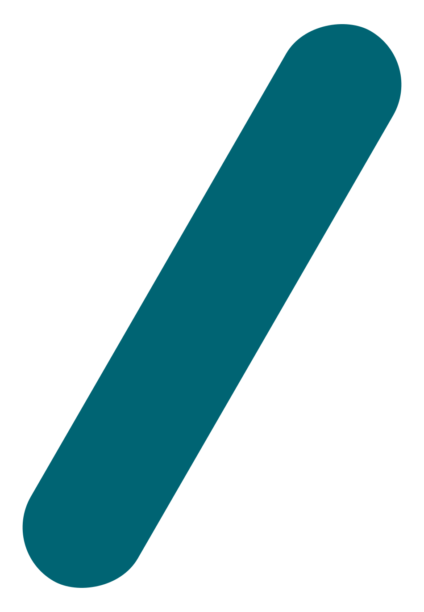
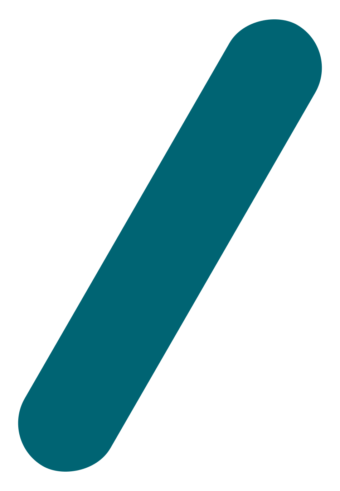

I have been working on my javascript website for a little over three months now. The idea was to build something simple, but also something that sticks in your mind! Its always a challenge I love to take on. One of the hardest things to overcome sometimes is just an empty text file. A blank canvas. Sometimes you just need to start throwing paint on it until it starts to take shape.
I went into this idea with only one main objective in mind. Showcase my Javascript capabilities. Without going overboard... Which can be very easy to do. I wanted to make is almost feel like a Single Page App, at least the main site, where the dom elements are just changing and you dont have to navigate between a ton of idfferent pages.
A few different methods went into work to make this happen. First I had to create "sudo" navigation links. What do I mean by "sudo" nav links? Well instead of using the default behavior on anchor tag links, I handled that in Javascript, by setting a timeout to allow for the SVG animations to play out, then re-assigning the value of the 'window.location.pathname' property to the target page. Another element is the animations of the background SVGs. On each page change, the svgs animate their position and rotation, to achieve the positions of their respective selves on the page being loaded.
To achieve these animations, I used a combination of CSS rules to manage timing, delay and certain display propeties, while using javascript to modify the actual rotational degree and positioning of each SVG element. Using simple element.style.transition = 'translate(xVal%, yVal%)' statements along with the transition timing rules, we can create smooth flowing animations that get triggered on an event or when your animation function runs.
These actions all play a vital role in giving the user the sense that they are staying on the same page and the content is changing. These types of projects can often be referred to as SPA's, or Single Page Apps. SPA's try to mimic the feel of using a native built app, while still being in the browser. A very powerful and in-demand concept in web development right now.
Although RabbitWerks is in fact three seperate html pages, didn't take away from the fact that I want to bring my users a seemless, cohesive, memorable experince in every way that I can.
Which brings me to the present. I had been carrying on from one customer service job to the next, and all the while feeling like my potential was so much more. But i didn't have a clear heading on which way to go. I took a job in construction as a brickmason laborer and found out after a year of hauling brick, that again, I felt I could be doing so much more.
During this time it happened that I needed a website made. And we have all been there on both sides, no one has $1000+ just hanging around to pay for a web designer. Not us common folk, at least.
Having had some training in college i decided to tackle the task myself, head on! So I began to look into where the world of web design was at these days. I was in for a shock!
HTML5 and CSS3 alone, blew me out of the water when I started out. There were language features that I couldn't have evn dreamed of having in college. HTML and CSS are supercharged with awesome power. Of course, what goes hand and hand with html and css? Javascript. One of the most, if not THE MOST important discoveries at that point was of Javascript.
Javascript. Its pretty amazing to me. Amazing enough to quit that brickmason job and immerse myself in everything JS development and programming in general. I have been doing freelance web design to pay the bills, but Javascript is where my passion lies…
My initial encounter with anything web design was Yahoo! Geo-Cities. They offered a free website builder. Must have, cause i was only in 6th grade. It didnt amount to much overall, but it was fun to play around and see what I could make on the screen. After which, my next run-in was in age of Myspace, and being in a punk-rock band in high school, we needed an awesome myspace design to accompany are rough and ragged sound.
Alongside myspace, I was taking photographics and screen printing classes throughout high-school, and found by doing so, that I enjoyed graphic design. The next step as obvious to me at that point... continue my journey into graphic design. So thats what I did. I enrolled in college and into a graphic design program. It went well, and during that time I got to play around with web design a bit. Which was fun, to a certain point, but I was more so focused on graphics that it didnt make much of an impression on me. At this point, it was HTML4 and something called "XHTML" was the hot ticket item.
Sadly, I never got to experience the wonder of Javascript at this point. That would have been way over our heads, anyway. As well as discovering that graphic design wasn't what I thought it would be.. Bad client expereiences, and a stolen laptop with all my college work and software. GONE. I never quite really bounced back from that as far as graphic design, and ended up needing to just find work at this point, graphic design, and anything web got put on the back burner for the long haul....
Hey everyone, and welcome to Rabbit Thoughts, otherwise known as my Javascript blog. Let me just take the time to say that if you're reading this, THANK YOU! YOU ARE AWESOME!! Now then, onwards and forwards. In this blog I will be talking about the various Werks and projects I have in motion. As well as any and all things I may come across on my adventures through Javascript.
So... What the heck is RabbitWerks? Good Question..
RabbitWerks is best described as an not-entirely-defined entity. RabbitWerks is as much of a concept as it is a name. It refers to the motion of ideas. How they are always ever-changing in some ways, and yet are fixed in other ways. One idea leads to another, which leads to another, in-turn creating a cycle. A loop. A never-ending hole.... The concept that there is no start point, and no end-point for an idea. A continuous cycle of werks and ideas.
My name is Sean Becker. This is my Story. RabbitWerks is my brainchild. Javascript is my playground.
More to come soon....